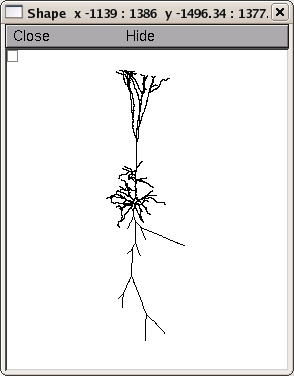
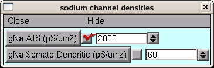
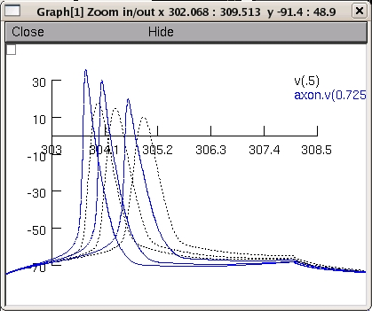

26/07/2008 Maarten H.P.Kole This model reproduces Figure 6a of the article "Action potential generation requires a high sodium channel density in the axon initial segment". Nature Neuroscience 11(2):178-86 (2008). http://www.nature.com/neuro/journal/v11/n2/abs/nn2040.html The example simulation shows that even with specific voltage-dependence of axonal Na+ channels a channel density of ~50-fold higher is required for robust initiation in the AIS. The voltage-dependence of activation and inactivation of the Na+ channels are constrained by the experimentally measured properties of the somato-dendritic (SD) and axon initial segment (AIS) Na+ channels. These two populations are defined within the "na.mod" and "nax.mod" files, respectively, and based on Hodgkin-Huxley formalism. Details on the specific channel kinetics and properties can be found in the Supplementary Information of the paper. The mod file was obtained from Mainen and Sejnowski (1996). When the folder is compiled using the mknrndll script the simulation can be started with "mosinit.hoc". For questions please contact maarten.kole@anu.edu.au Example usage: auto-launch the simulation from ModelDB or download and extract the archive and then under linux/unix: ----------- Compile the mod files by cd'ing to NN_kole and running nrnivmodl. Start the simulation with nrngui mosinit.hoc MAC OS X: --------- Drag and drop the NN_kole folder onto the mrknrndll icon. Drag and drop the mosinit.hoc file onto the nrngui icon. Windows: -------- Compile the mod files by starting mknrndll, changing directory to the NN_kole folder and selecting to make the nrnmech.dll. Double click on the mosinit.hoc file in a windows explorer window. Once the simulation is started: ------------------------------- The morphology of the cell  an instantaneous plot of the voltage as a function of distance thoughout the cell, and other windows appear. You can recreate figure 6a left from the publication by pressing Init & Run in the RunControl Box. Select "Keep lines" in the voltage graph (drag from empty box in the upper left corner and release mouse button on this menu item), and, optionally, select to change the v(0.5) trace to a black dotted line (use the Color/Brush menu item on the previous menu list, select a black line and a dotted line and then click on the v(.5) text on the graph). Then changing the channel density by typing the new values into the box:  and then press Init & Run again. Repeat with the remaining value (simulation starts with 3000 so you will have to run with 4000 and 2000. When done the graph should look like: 